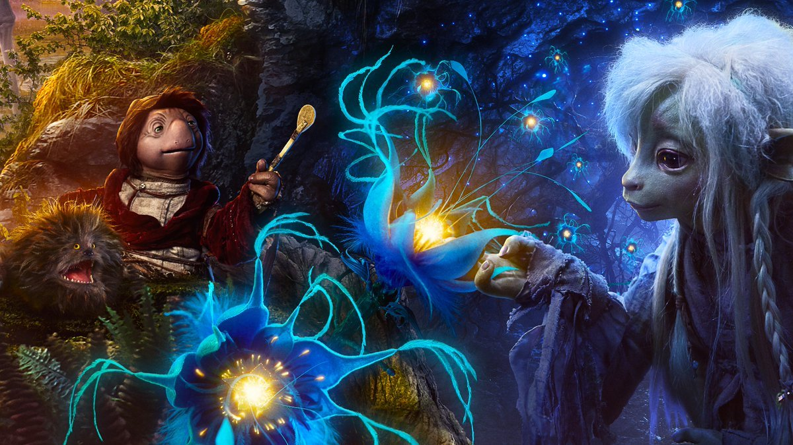

Quiz de Perguntas e Respostas

1. Quem são os protagonistas do filme "O Cristal Encantado"(1982)?
Luke e Leia
Jen e Kira
Harry e Hermione
Frodo e Sam
2.Na série, qual Gelfling descobre os segredos sombrios dos Skeksis e lidera a resistência?
Jen
Rian
Kira
Brea
3.Qual é o nome do planeta onde "O Cristal Encantado" se passa??
Thra
Etheria
Naboo
Pandora
4.Na série "O Cristal Encantado: A Era da Resistência", quantos clãs de Gelflings existem?
5
3
7
9
5.Qual é a fonte de poder que os Skeksis abusam tanto no filme quanto na série?
A Água da Vida
A Força dos Mystics
A Luz dos Sóis
A Essência dos Gelflings
6.De qual clã líder Gelfling Brea faz parte?
Stonewood
Vapra
Sifa
Grottan
7.Qual é o significado da "Canção da Flor de Gelfling", mencionada tanto no filme quanto na série?
Uma antiga profecia sobre a derrota dos Skeksis
Uma canção que revela o segredo do Cristal
Um ritual de união dos clãs Gelfling
Uma lenda sobre a criação de Thra
8.Na série, o que acontece com Deet após ela absorver o poder da Corrupção (Darkening)?
Ela se transforma em um Skeksis
Ela perde a memória e sua identidade
Ela ganha poderes, mas se torna uma ameaça
Ela se une aos Mystics para curar o Cristal
9.Qual é a relação entre os Skeksis e os Mystics no universo de "O Cristal Encantado"?
Eles são inimigos jurados
Eles pertencem a diferentes planetas
Eles são a mesma raça dividida em dois
Eles são aliados
10.No filme de 1982, o que acontece com o Cristal Encantado ao final da história?
É destruído
É restaurado
É roubado pelos Skeksis
É levado para outro planeta
Enviar Respostas